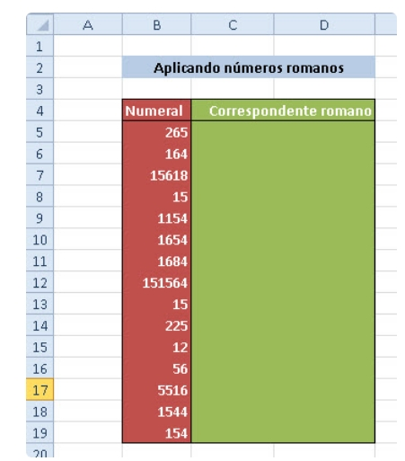
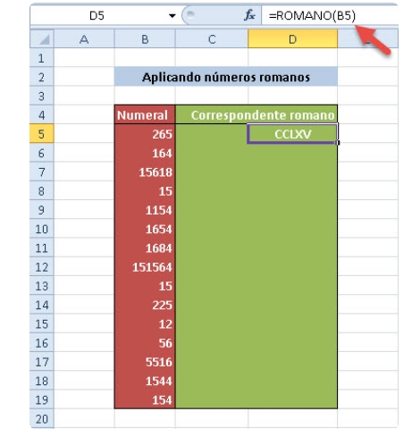
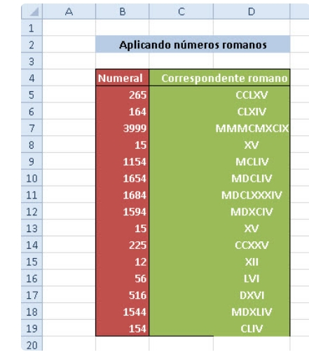
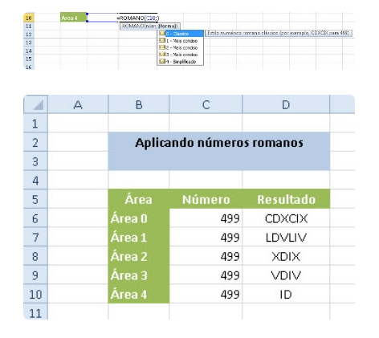

Esta função é capaz de transcrever para o romano qualquer número inteiro até 3999. Lembre-se: os romanos não tinham números com vírgula, portanto, se você colocar um desses o Excel vai fazer a transcrição até a vírgula e ignorar o que estiver após ela.
A sintaxe da função é =Romano(número, [forma]), onde "número" é o número que se deseja transformar em algarismos romanos; e "forma" é um argumento opcional que pode ser um número de 1 a 4 sendo que o número 0 ou a omissão deste argumento corresponde à forma clássica, e os números correspondem a um resultado mais ou menos conciso respectivamente.
Como exemplo, supomos que há a seguinte tabela, com os seguintes valores:
Agora para transformarmos o primeiro valor vamos inserir a fórmula =ROMANO(B5), simples assim. Veja o resultado:
Veja como ficará todos os números após convertidos:
Agora vou esplica sobre os 5 tipos de "formas" diferentes. Veja as diferenças entre elas na prática:
